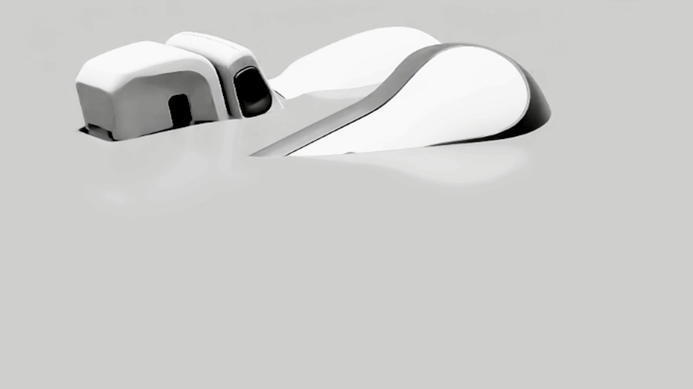
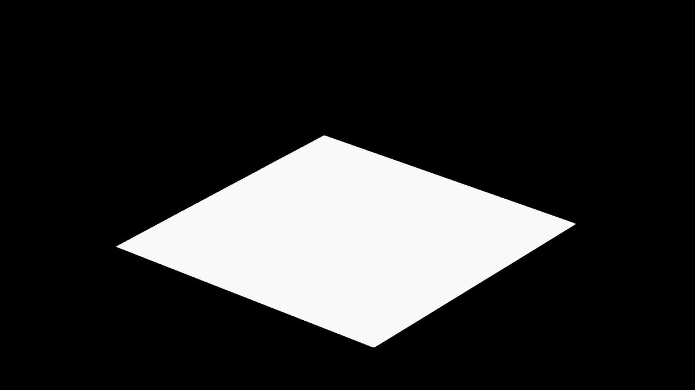
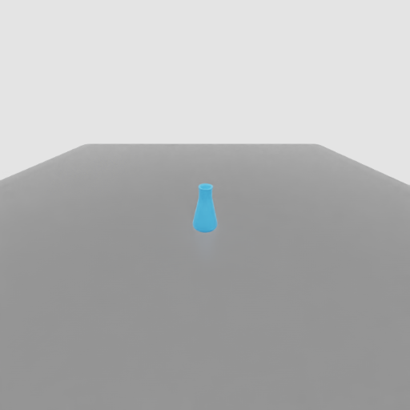
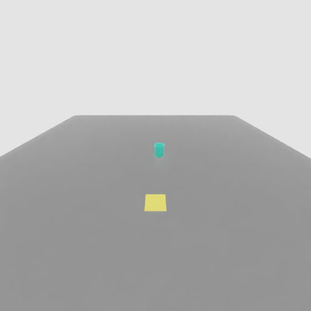
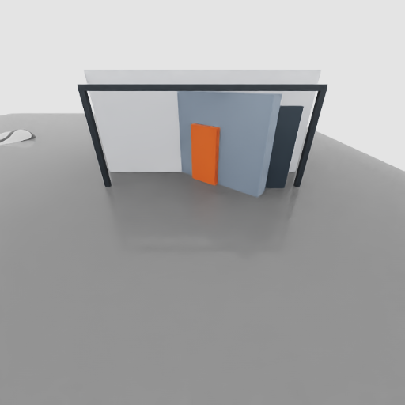

当前进展总览
pick、place、open_door。labutopia_franka_smoke_clean8_20260622_1002081 skipped，validator 通过。本周完成了什么
| 事项 | 产品视角状态 | 说明 | 证据边界 |
|---|---|---|---|
| LabUtopia Franka POC | 已跑通 | 三个 POC 任务能在本地评测 server 中启动、reset、step、结束。 | 证明接入链路，不证明策略能力。 |
| 场景资产加载 | Franka POC 闭环 | 通过 manifest 把 LabUtopia overlay 资产根目录接入运行时，并映射对象名。 | 证明 scene overlay 可加载；不证明 reset 后布局或相机画面已验收。 |
| 结果生命周期 | 已修复 | 每个任务写 result_info.json，最终写 result.json，后处理异常 fail fast。 |
不会把后处理错误伪装成已完成。 |
| 并行任务隔离 | 已隔离 | LabUtopia 用 18088，EOS/其他工程师侧 8087 未被干扰。 |
run_id、worktree、端口均独立。 |
| 渲染图验收 | 部分可读 | 当前三张 eval readback 图为非黑：pick 已清楚，place 基本可读但可再放大，open_door 关闭位已回到 0.0，门板、框架和单个橙色把手已可识别。 |
三张都可作为当前诊断图；正式验收仍要等自动 render_validation、三任务视觉 QA 和 Lift2 baseline gate 通过。 |
资产加载是怎么做的
可以把资产加载理解成“任务配置只写短路径，运行时通过 manifest 找到真实资产仓库，再把对象名翻译成评测系统认识的名字”。这让任务包保持轻量，也避免把大资产直接放进代码仓库。
scene_usds/labutopia/level1_poc/lab_001/scene。configs/tasks/ebench/labutopia_lab_poc/common/assets_manifest.json。ASSETS_DIR 指到 LabUtopia overlay。scene.usda 文件并加载进 Isaac Sim。beaker2 映射成 obj_beaker2 供 evaluator 使用。已经闭环的部分
LabUtopia 场景 overlay 能被 Franka POC 加载，相关对象名能通过运行时对象映射进入 evaluator。P1 后，静态 USD 坐标也已经归一到工作区，门把手保留为干燥箱内部子路径。这证明接入路径和静态资产组织已经推进，不证明任务图视觉验收。
还没闭环的部分
pick/place 的任务级构图已经明显推进，但还没做正式 PASS 签收；open_door 的运行期 articulation 已从爆值推进到稳定关闭位，最新正面图里门板、外框和单个橙色把手已可识别，但自动 render_validation 仍保持阻断。Lift2 官方 baseline 还需要默认资产里的 robot_usds/lift2 和 miscs/curobo，这一步必须排在视觉 gate 之后。
EBench 加载后的三任务渲染图
2026-06-23 到 2026-06-24 P1 复核结论：旧图和新图都放在这里，方便做前后对照。旧图是历史失败样例，用来说明最开始“相机拍不到、资产位置不对、任务目标看不懂”的问题；新图来自正常 EBench/evaluator camera readback，用来说明我们已经把底层链路推进到“能拍到真实场景”。当前结论是 pick 已清楚、place 基本可读、open_door 已从黑箱角和物理爆值推进到关闭位正确，且门板、框架、单个橙色把手可识别；但自动验收仍未通过。
旧图要表达的问题
旧图的核心问题不是“画面不够漂亮”，而是“看图不能判断任务是否成立”：抓取图像白色设备局部，不像要抓的蓝色瓶；放置图只剩黑背景和白色平面，看不到要放的物体；开门图只拍到黑色箱体角，看不到门、把手和动作点。这类图只能说明我们曾经拍到过某个局部，不能说明 EBench 评测链路已经可用。
我们是怎么解决的
先修相机和光照，让评测相机真的能读回画面；再把瓶子、烧杯、托盘、干燥箱从原始实验室坐标搬回 Franka 工作区；然后按任务隐藏无关物体。对 open_door 还额外做了干燥箱运行期替身资产：固定底座、只保留一个门关节、对齐铰链；随后补关节初始目标回放，把把手移到非铰链侧，删除额外橙色块，并换成正面任务相机，让门板、框架和单把手能同时看见。
渲染证据状态
当前三任务均为 readback_visible。最新任务级隐藏后，level1_pick 只保留抓取瓶子，目标清楚；level1_place 同时保留烧杯和黄色目标托盘，任务关系基本可读；level1_open_door 能完成 readback，关节位置已回到期望关闭位 0.0，正面图里箱体框架、门板和单个橙色把手已可识别；但诊断输出仍显示 render_validation_not_passed，正式视觉 QA 仍未通过。
旧图：历史失败样例
这三张旧图不是最终验收图。它们的问题很直观：像是在看一个没摆好的舞台，有的只拍到局部，有的看不到任务目标，有的看不出机器人到底要抓、放还是开门。更关键的是，旧图不是稳定的 eval-path 证据，不能代表模型评测时真实看到的画面。


旧图问题怎么解决
| 任务 | 旧图问题 | 已经做的修复 | 现在还差什么 |
|---|---|---|---|
level1_pick |
旧图里抓取目标不明显，PM 只看图无法判断“要抓哪个瓶子”。 | 修正 eval camera readback、相机朝向、光照，把瓶子归一到 Franka 工作区，并在 pick 任务里隐藏烧杯、托盘、干燥箱等非目标物体。 | 当前新图已经能让 PM 看懂“抓这个蓝色瓶子”；还差正式 pixel/视觉 QA 签收，才能把 task_render_accepted 改成 true。 |
level1_place |
旧图看不出源物体和目标托盘的关系，不像一个“把东西放到哪里”的任务。 | 修正托盘、烧杯、瓶子坐标和颜色标记，并在 place 任务里隐藏瓶子和干燥箱，只保留烧杯与目标托盘。 | 当前新图能看懂“把烧杯放到黄色托盘附近”；后续可以再拉近相机，让目标关系更大、更稳定。 |
level1_open_door |
旧图看不清干燥箱门和门把手，无法判断开门动作目标。 | 把门把手恢复为干燥箱内部子部件，不再作为独立物体飞走；同时生成运行期干燥箱替身资产，固定底座并只保留一个门关节；再补关节初始目标回放、把手位置修正、删除重复橙色块和任务专用正面相机。 | 最新图中关节已回到期望关闭位 0.0，门板、框架和单个橙色把手可见；但自动 render_validation 仍未通过，下一步要把视觉 QA 和 Lift2 baseline gate 接上。 |
已经解决了什么
先把黑屏定位到相机 readback，不是 recorder 写盘；然后修了 camera axes/pose 和确定性光照。接着把 LabUtopia 原始坐标里的瓶子、烧杯、托盘、干燥箱归一到 Franka 工作区，并把门把手恢复成干燥箱内部子部件。最后按任务隐藏非目标资产，让 pick/place 的图不再被无关物体干扰。
还没解决什么
pick/place 已经从“看不懂任务”推进到“PM 可以看懂当前诊断图”；但还没做正式验收签收。open_door 已从爆值和黑箱角推进到关闭位正确、门板/框架/单把手可见，不过自动验收仍未放行，所以仍不能说官方 baseline 可评。
新图：当前 EBench eval readback
这三张是当前更可信的诊断图，因为它们来自 evaluator camera readback。它们证明底层加载和相机读回已经推进，但也暴露了下一步要解决的正式视觉验收问题。



RevoluteJoint，关节位置已回到期望关闭位 0.0；门板、框架和单个橙色把手在同一 evaluator readback 图里可见，但诊断仍标记 render_validation_not_passed，不能作为官方 baseline 可评证据。source: saved/diagnostics/labutopia_p1_open_door_single_handle_formal_20260624_0001/readback_after_get_eval_camera_data/camera2/00000.png验证证据
| 证据项 | 结果 | 说明 |
|---|---|---|
| run_id | labutopia_franka_smoke_clean8_20260622_100208 |
独立 smoke 运行记录。 |
| episode 完成度 | 3/3 complete | level1_pick、level1_place、level1_open_door 均结束并写入结果。 |
| score / sr | 0.0 |
默认动作 smoke 的预期结果，只说明链路，不说明求解能力。 |
| render smoke | labutopia_franka_render_smoke_20260622_150819 |
同一任务包跑过保存帧 smoke；eval recorder 的 camera2 帧为纯黑，后续 runtime 诊断确认黑帧发生在 get_eval_camera_data() 后、recorder 写盘前。 |
| render diagnostics | P1 advanced |
旧诊断：三个任务均为 readback_black_before_recorder。P1 诊断：三个任务均为 readback_visible；最新 open_door 运行期诊断已从爆值推进到关闭位正确、门板/框架/单把手可见，但 render_validation 仍未通过。 |
| P0a/P0b manifest | pick/place visible |
render_p0a_p0b_20260623.json 记录 camera axes/pose、deterministic light 和 pick/place 非黑 readback。 |
| P1 asset/layout manifest | 3/3 visible, 2 readable + 1 warn |
render_p1_asset_layout_20260623.json 记录三任务 eval readback 图、静态 USD 坐标、任务级隐藏和 open_door 最新关闭位/单把手正面诊断状态。 |
| visual QA | READABLE / READABLE / WARN |
pick 已清楚，place 基本可读；open_door 可诊断且关闭位正确，门板/框架/单把手可识别，但自动验收仍未签收。 |
| report display QA | passed |
Chromium headless 桌面/移动端长截图已检查；6 张图片文件均存在，DOM 包含旧图、新图、单把手 open_door 和 render_validation_not_passed 说明。这个检查只证明页面展示没坏，不等于任务视觉验收通过。 |
| pytest | 56 passed, 1 skipped |
覆盖资产 override、fallback metadata、结果落盘、后处理 fail-fast 和 render diagnostic 合同等回归点。 |
| diagnostic contract | 2 passed |
纯 Python 帧统计和黑帧分类接口不依赖 Isaac，可快速回归。 |
| package validator | LabUtopia task package validation OK |
任务包、manifest、camera cleanup 配置通过静态校验。 |
| 端口隔离 | 18088 closed, 8087 online |
没有和 EOS/其他工程师正在跑的任务混淆。 |
问题和处理结果
| 问题 | 表现 | 处理方式 | 当前状态 |
|---|---|---|---|
| 资产根目录不对 | 系统一开始会去默认目录找 LabUtopia 场景。 | 增加 LabUtopia manifest 识别逻辑，运行时切换 overlay asset root。 | 已解决 |
缺少 meta_info.pkl |
传统采集包依赖的 metadata 在 LabUtopia POC 中不存在。 | 从实时场景自动生成最小可用 metadata。 | 已解决 |
| camera cleanup 字段缺失 | 切换任务时 camera 清理报字段错误。 | 补齐 POC camera 配置 cleanup flags。 | 已解决 |
| eval recorder camera2 黑屏 | 保存过程帧时 camera2 输出为黑屏。 |
已修 camera axes/pose、deterministic lighting 和工作区相机；P1 三任务均能从 eval camera 读回非黑图。 | 黑屏解除 |
| 旧图不可作为验收证据 | 旧图看不清任务目标，也不是稳定 eval-path 证据。 | 旧图保留为历史失败样例；新图改用正常 evaluator readback，并清楚标注哪些已可读、哪些仍 blocked。 | 已解释清楚 |
| 当前新图仍未全部验收 | pick 已清楚，place 基本可读但还可放大；open_door 已能读回且关闭位正确，门板/框架/单把手可识别，但自动 render_validation 仍未放行。 |
pick/place 补正式视觉 QA；open_door 把当前正面图纳入同一验收门槛，并继续接 Lift2 baseline 所需的复合资产和官方 runner gate。 | 部分通过诊断 |
| 资产导入/layout 静态坐标 | 早期对象在源 lab 坐标，门把手会像独立物体一样飞到远处。 | P1 已把对象归一到 Franka 工作区，并把 handle 保留为 DryingBox 内部子路径。 | 静态层已推进 |
open_door runtime 物理不稳定 |
旧版本 runtime articulation joint position 爆到 1.573e13，并伴随 PhysX transform warning。 |
已用稳定的 DryingBox runtime surrogate、固定底座、对齐后的门铰链和关节目标回放修复；最新读数为 0.0 rad 且只暴露 RevoluteJoint。 |
物理层已解决 |
| 最终进度不 complete | 任务已跑完，但客户端等待最终结果直到超时。 | 任务结束时写最小 result_info.json 并修复进度统计。 |
已解决 |
| 后处理异常可能被误记为完成 | 异常路径不能用 0 分兜底伪装为成功。 | 增加 fail-fast 逻辑和回归测试。 | 已解决 |
Claim Boundary
现在可以说
- LabUtopia Franka POC 已经能通过 GenManip/EBench server-client 链路本地跑完。
- 三个 level-1 任务能完成 reset/step/finalize，并生成 per-task 和 final result。
- Franka POC 的 LabUtopia scene overlay 加载路径已经验证。
- 旧图问题已经明确：看不清任务目标，也不是稳定 eval-path 证据。
- 黑帧边界已经定位到 camera readback 之后、recorder 写盘之前。
- P1 后，三任务 eval
camera2都已从纯黑变为非黑 readback。 - 静态 USD 坐标和门把手层级已经明显推进，handle 不再作为独立飞走物体。
- 任务级隐藏后，
pick和place的当前诊断图已经能让 PM 看懂目标和关系。
现在不能说
- 不能说任务已经求解成功，当前默认动作得分是
0.0。 - 不能说官方 Lift2 baseline 已经可评，Lift2 复合资产和官方 runner 还没闭环。
- 不能说三任务画面/视频/任务布局已经全部验收；
open_door仍未通过。 - 不能说
open_door已经视觉可评；当前图可以做 PM 诊断说明，但诊断仍标记render_validation_not_passed。
接下来几步
Camera readback 源头修复
已完成 camera axes/pose、deterministic lighting 和工作区相机修复；三任务已经非黑。
静态资产/layout 正规化
已把任务对象归一到 Franka 工作区，保留 nested handle transform，并用静态 USD 校验 object center/bounds/scale/light。
open_door 视角和门缝增强
物理爆值和关闭位问题已通过 DryingBox surrogate 与关节目标回放推进到可诊断；最新正面图已经让门板、框架和单个橙色把手可识别。下一步把这张图纳入正式视觉 QA，并继续让自动 render_validation 成为是否可评的硬门槛。
任务级相机/构图
pick/place 先补正式视觉 QA；open_door 使用最新单把手正式相机图继续验收，要求门板、门面、把手和任务动作点在 eval 图中清楚可见。
Eval-path 重拍验收
用正常 evaluator/readback 路径重新抓关键帧，写 evidence manifest，并要求三任务独立视觉 QA 全部 PASS 后再签收。
Lift2 资产预检
camera readback、资产/layout 和三图视觉 QA 通过后，再构建复合资产根目录：LabUtopia scene overlay + 默认 robot_usds/lift2 + 默认 miscs/curobo。
Lift2 dry smoke
在独立端口运行 lift2_candidate，要求 3/3 complete，但仍保持 official_baseline_execution=false。
官方 runner 发现
定位官方 EBench/OpenPI/Lift2 runner 文件，记录路径、hash 和入口，不直接执行策略。
官方式本地尝试
只有 P5 过后，才做一轮官方风格 online loop，并保留 terminal evidence。
相关文档
| 文档 | 用途 | 链接 |
|---|---|---|
| Markdown 周报 | 文字版 PM 汇报。 | 打开 |
| Franka smoke 记录 | 本次 smoke 的 run_id、命令、结果路径。 | 打开 |
| Franka render smoke 记录 | 三任务失败渲染样例、camera2 黑屏和 readback 边界。 | 打开 |
| Render visual investigation | 6/23 多角度复核：旧图问题、P0 黑屏修复、P1 静态资产归一、任务级隐藏后的新 eval readback 图和 open_door 未验收边界。 | 打开 |
| Render diagnostics manifest | 三任务 runtime 诊断、帧 hash、claim boundary 和 layout red flags。 | 打开 |
| P0a/P0b render manifest | camera axes/pose、deterministic light 和 pick/place 非黑 readback 证据。 | 打开 |
| P1 asset/layout manifest | 三任务 eval readback 图、静态 USD 坐标、任务级隐藏、open_door 关闭位、单把手正面诊断和 render_validation_not_passed 边界。 |
打开 |
| Render/layout closure plan | P0-P2 修复计划：camera 诊断、reset 布局、eval-path 重拍和视觉 QA。 | 打开 |
| Lift2 baseline lane plan | 仿 EOS 的 P0-P4 证据门推进计划。 | 打开 |
| POC status plan | 本周 POC 状态和环境决策。 | 打开 |